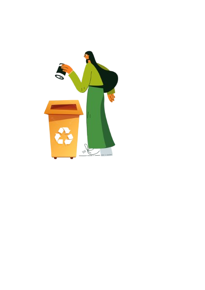

Vamos aprender mais sobre Reciclagem?
A reciclagem é um processo de transformação de resíduos sólidos descartáveis em novos insumos e produtos. O processo de reciclagem é bastante antigo e foi ampliado mediante a grande produção de lixo no mundo. A função da reciclagem é transformar um material descartável em um novo tipo de insumo e/ou produto.
Tipos de Lixo


Limpeza
Para facilitar o processo de reciclagem tire o excesso de sujeira dos materiais. Pois assim evitamos mau cheiro nos pontos de reciclagem e a proliferação de insetos, que podem prejudicar a saúde dos trabalhadores. Limpe, por exemplo, o pote de iogurte com um papel usado ou água de reuso e seque a embalagem
Separação
Para realizar a separação correta divida o lixo reciclável(seco) dos lixos orgânicos e comum(úmidos) se possível em latões diferentes. Uma dica é utilizar sacos de lixo plastico para separar os materias recicláveis e lembre-se de não rasgar ou amassar os papeis que vão ser descartados e olhe sempre se as embalagens estão vazias.

Reaproveitamento do Lixo Orgânico e Lixo Especial
Ao separar o lixo orgânico é possível criar uma composteira e utilizar o adubo para nutrir a terra de uma horta caseira, por exemplo.Caso não tenha a intenção de utilizar o material em casa, há empresas e associações que fazem esse trabalho e retornam os materiais em forma de adubo. São chamados de lixo especial : óleo de cozinha, latas de aerossol, eletrônicos, baterias, pilhas, fios, lâmpadas e eletrodomésticos. Há empresas e ONGs que recebem óleo para a fabricação de sabão, por exemplo. Remédios não devem ser jogados no vaso sanitário ou no lixo comum, pois podem prejudicar animais ou contaminar o solo e a água. O descarte deve ser feito em farmácias ou postos de saúde. Já as sobras de tecidos ou de roupas podem ser enviadas para empresas ou instituições de reaproveitamento têxtil.
Tempo de Decomposição de Alguns Materiais

Temos uma cartilha educativa com mais informações sobre reciclagem e dicas para ajudar você a fazer o descarte correto na sua casa.